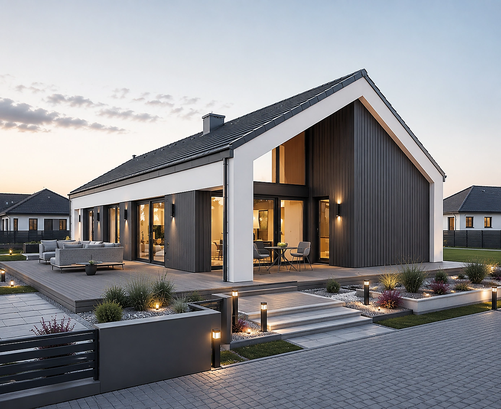
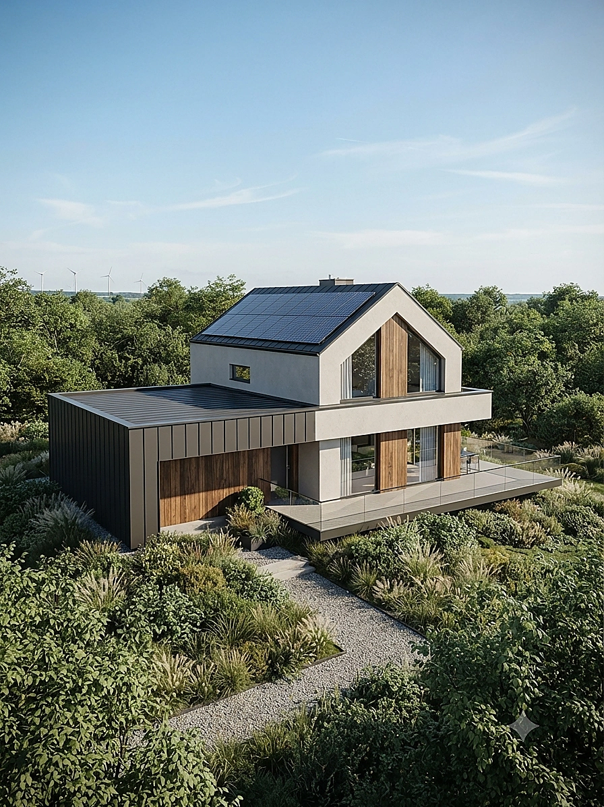
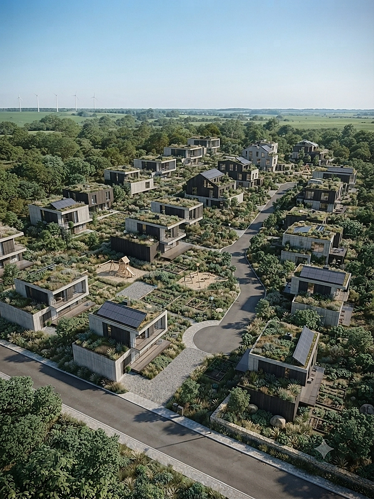
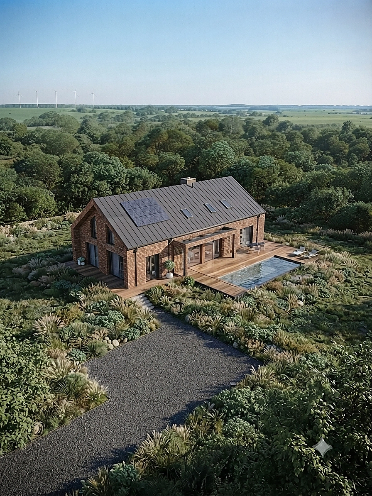
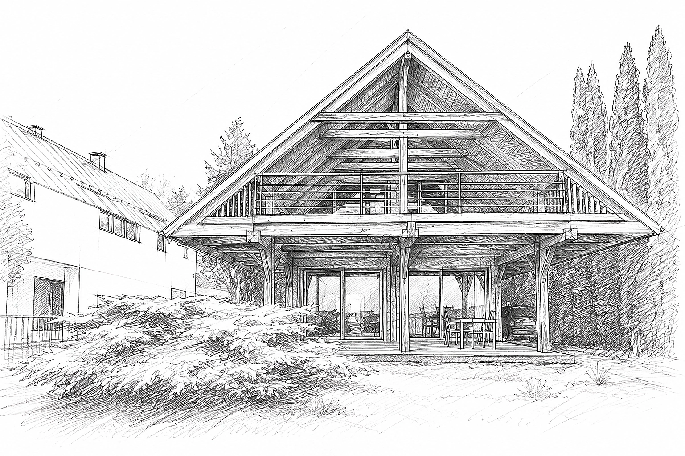
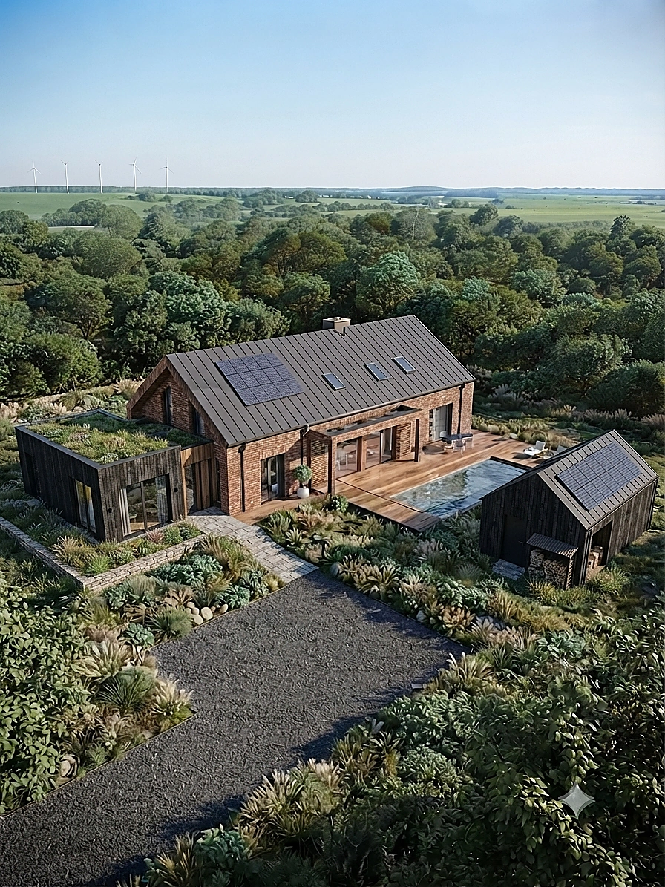

← Powrót do Portfolio
Koncepcja Urbanistyczna · Osiedle Dwulokalowe
URBANISTYKA & ARCHITEKTURA REZYDENCJONALNA
Osiedle budynków jednorodzinnych dwulokalowych
Nowoczesny zespół budynków w zabudowie bliźniaczej i dwulokalowej z optymalizacją nasłonecznienia, wydzielonymi ogrodami oraz pełną infrastrukturą dojazdową.

Widok z Lotu Ptaka · Koncepcja Zagospodarowania Terenu
Parametry Techniczne
Lokalizacja:Województwo Pomorskie
Typ Zabudowy:Dwulokalowa / Bliźniacza
Standard:Energooszczędny WT2021
Ogrzewanie:Pompy Ciepła / Fotowoltaika
Projektant:mgr inż. Adam Kubat
Koncepcja i Ergonomia Przestrzenna
Projekt osiedla dwulokalowego łączy wysoką intensywność zabudowy z zachowaniem poczucia prywatności każdego lokatora. Układ budynków został opracowany na podstawie szczegółowych symulacji kąta padania promieni słonecznych.
Każdy segmnet dysponuje osobnym wejściem, prywatnym ogródkiem przydomowym oraz 2 miejscami postojowymi. Architektura charakteryzuje się stonowaną paletą barw, nowoczesną dachówką płaską oraz dużymi przeszkleniami strefy dziennej.
Galeria Rendery Osiedla





